Previous: The Dirty Diaper Drill | 🏠 Famous Coaches Home | Next: The Killer Forehand - Part 1
The Forehand Volley
Comprehensive unified tennis knowledge base — Fundamentals, Stroke Analysis, Reference Library, and more
The Forehand Volley
Nick Bollettieri
Ready to learn the forehand volley? OK. There's the block volley, the swinging volley, the touch volley, the angle volley, the drop volley, the high volley, the low volley, and the half volley. But if that seems like a lot, don't panic, because I'm here to show them all to you, step by step.
Ready to learn the forehand volley?
The Grip
One thing all these volleys do have in common is the grip. The continental grip is equally effective for both the forehand and backhand side, as well as for the bottom hand on two handed backhand volleys. The continental grip positions the V shape between your thumb and first finger in line with the top edge of the grip. Since this is also the grip for serves and overheads, you'll find when you serve and volley, you never have to change your grip.
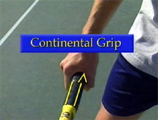
The continental is THE grip.
The continental grip provides the best support and control for the racquet face at contact throughout your full range of motion. Notice how the elbow is positioned inward as the wrist remains in a strong position when using this grip.
Split Step
The volley doesn't exist in a vacuum. It's part of a pattern of movement forward to the net that begins with the approach and ends, hopefully, with you winning the point. The key move for transiting from the approach to the volley itself is the split step.
When you split stay light on your feet and ready to move.
As your opponent is about to make contact, you split step to gain control of your body's forward momentum and establish your balance. The split step also allows you to read the opponent's next shot and make your move to the ball.
The timing of your split step must be in sync with the opponent's contact to allow you time to react. Even a fraction of a second late on your split will often close your window of opportunity to cover the ball and hit a forcing volley.
The elbow is in for support and control.
Stay light on your feet, energized, and ready to make your move. If you plant your feet too heavily, stopping all your forward momentum, you will find it will be much more difficult to move to the ball. All too often, when the body weight gets planted back on the heels, you end up watching the passing shot go by. Don't get too settled in.
In the ready position, on your split step you should have your arms and racquet out in front of you, centered between your shoulders, putting you at the midpoint so that you can turn to either the forehand or the backhand side.
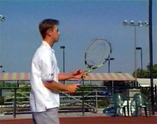
Hands high, racket head pointed up, light feel.
The racquet should be partially in front of your face. Keeping the racquet head above your hands and pointed upward will create a lighter feel to the racquet, allowing you to be quicker on preparation for the volleys. When you have to reflex in situations with less than a second to execute, any excess motion in your preparation will make you late for the shot.
Most of the time when you are at the net, you will be volleying in quick reflex mode. Your preparation needs to be compact with no excess motion. Your objective is to prepare immediately for contact. You'll use the pace that is already on the passing shots, so you won't need a back swing.

Like the catch in baseball, the elbow doesn't move backwards.
A great analogy for understanding the preparation and the mentality on the volley is to study the catch in baseball. Watch the right elbow closely as it prepares for the catch. There's no backward movement of the elbow. The arm and glove move forward to meet the ball.
On the volley, the same movement should occur. You want to eliminate any backward movement of the elbow in your preparation on the volley. Even though the racquet head may be going back slightly, the elbow is still going forward in the process.
The racket head may go back but the elbow moves forward.
The best way to test and train the correct preparation habit is by positioning yourself up against the back fence and having someone feed you volleys. If your racquet head hits the back fence, you're taking a back swing. This exercise will help you eliminate that and come forward to meet the ball.
Your preparation should position the racquet in front of you so that your contact point is preferably between your shoulders and in line with the center of your chest. Your racquet and arm should make an L shape, showing strong leverage in the wrist position. On your basic block volley, used in reflex situations there's very little if any follow through. Remember, you're thinking catch, not swing.
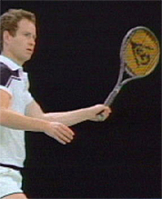
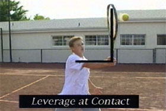
The test for taking a backswing.
Leverage in the wrist comes from the "L" shape.
The Block Volley
On a block volley, the arm and racquet function is one solid unit, blocking the ball like a backboard. To achieve depth, use your footwork to drive your body weight into contact to help provide punch to your volley as your arm and racquet remain firm.
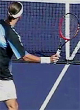
Watch the arm and racket move forward as a unit.
When the ball is well within your reach, you can create angle volleys by moving your contact point more out in front of you, allowing you to angle the racquet face.
For the inside out angle volley, you must allow your hand to get a little ahead of your contact point to create the inside out angle in the racquet.
When you have to lunge and reach for volleys, you can create angle in the racquet face by adjusting the position of your wrist.
For those softer angled touch volleys used to put away the ball, you must create the angle in your racquet face, then be prepared to use your arm and racquet like a shock absorber.
Drop Volley
To execute a drop volley, your arm and racquet must again function like a shock absorber, absorbing nearly all the pace of the incoming shot. Your preparation positions the racquet face directly to contact point position and, in your mind, you're thinking, "Catch the ball on contact."
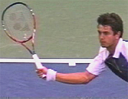
The racket and arm recoil as a unit.
On impact, the wrist position maintains enough firmness to keep the racquet and arm together as one solid unit. Watch how the elbow holds position and on impact the lower forearm and racquet recoil together, absorbing the shock of the ball. But make sure your hand doesn't grip too tightly or you'll lose flexibility and feel for the shot.
Your setup for the drop volley should have the same preparation as your deep volley, disguising the shot so the opponent can't anticipate the depth. Your intent on the drop volley should not be to make the shot perfect, just good enough to force the opponent. If you go for the outright winners, you'll end up making too many errors.
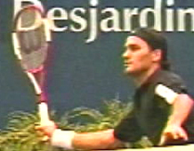
Low volley keys: Getting down and spreading your feet.
Low Volley
In many first volley situations, you'll have to execute the low volley, making contact just before the ball bounces. You must force yourself to get down for these shots by spreading your feet and really bending your knees.
You should realize that the opponent has you in a defensive position, having hit the ball to your feet. So don't rush through this shot. Take the time to get the ball back into play, and hopefully deep. To give the ball lift over the net, you should angle the racquet face so that it is open slightly.
Half Volley
You should make every effort to get to the ball and volley it before it bounces so that you don't lose offensive control of the point. But at times, you will be caught in situations where you must half volley. Executing the half volley is not all that difficult if you keep it simple and don't panic.
Treat it just like the low volley by getting down to make the shot. Determine where the ball will bounce, then position the racquet head directly behind that spot.
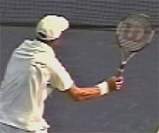
On the half volley, position the racket head behind the bounce.
The closer you can position the racquet behind the bounce, the better you can judge the height of contact and the timing. Using a slightly open racquet face, you can either block the ball or add a little punch with a follow through. The half volley drop shot is often a great solution to force the opponent. But avoid trying to make the shot better than it needs to be.
When you're in a first volley situation, your low volleys and half volleys work like approach shots used to improve your net position to close the point. Using a percentage shot pattern rule for approach shots, the down the line direction will provide the shortest path to reaching your closing net position for the next shot.
When working with the low setup volleys near the center mid court, choosing to hit the volley straight ahead down the center of the court reduces the passing shot angles and makes the lob a more difficult option for the opponent.
Recovery for the volley is even more important than recovery on a groundstroke. Why? When you are at the net the ball is going to reach you as much as 40% faster. The initial volley's important, but the recovery for the second volley and the covering of position is even more essential.
On the high volley, drive the butt of the racket forward and down
High Volley
The high volley can be a very awkward shot for many players, especially when the incoming ball is a high floater. Typically, you get anxious to swing at it and if you don't use the right technique, the ball can end up hitting the fence on the fly.
When you need to apply some pace to the volley, there's one key element to remember. As you prepare for the volley with your elbow moving forward as the first move, you should angle the butt of the racquet towards the ball.
As the forward action begins, you drive the butt of the racquet forward and down along the path like a waterfall. This action sends the racquet face up into contact with plenty of pop. Notice there's no snapping of the wrist in this action. The wrist maintains the strong leverage position through contact. You can learn to add power with great control using this technique for the high floating volley.
The Swinging Volley
The swinging volley has always been a trademark of the Bollettieri Academy students. We teach this shot to be used as a tool for sneak attack out of the rally. It is basically nothing more than a regular ground stroke without letting the ball bounce.
The swinging volley: a groundstroke hit in the air.
Shifting to the same grip you use on your forehand ground stroke, your back swing should be short and compact. You are preparing to take a slightly low to high stroke. Position yourself so you can work with the ball within your preferred contact zone.
You should add some top spin and build margin of error into this shot as you try to force the opponent. Follow this shot to net as you would on any approach shot to close the point if necessary. Stay Tuned because in the next article we'll look at the backhand volley in the same detailed way.

Nick Bollettieri is the legendary coach who invented the concept of the tennis academy more than 30 years ago. He has trained thousands of elite players, including some of the greatest champions in the history of the game, players like Andre Agassi, Tommy Haas, Jim Courier, Monica Seles, Maria Sharapova, and Boris Becker. IMG Bollettieri Academies are located in Bradenton, Florida.
Additional figures (from header/footer of source docx):
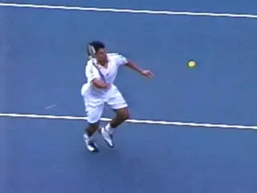

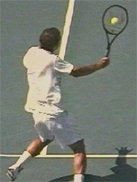
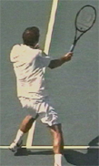
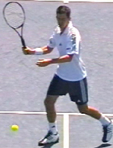
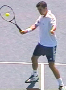
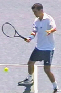

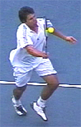
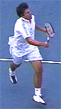


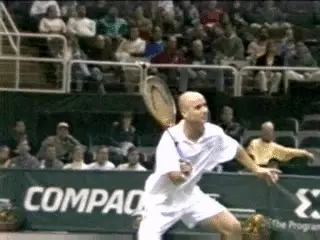

Source: tennisplayer.net archive — The Forehand Volley.docx (John Yandell teaching library, 2002-2022). Extracted and rendered as HTML for Tennis Future Lab.